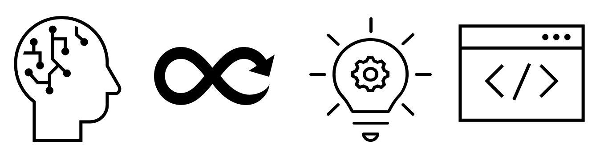

Feel free to look around. If you need help, please let my personal chatbot assistant help you!
Ideas / Innovation
Software / Website Development
Security / Ethical Hacking
DevOps / Automation
April 2019, I attended a training by
A short background of my first company, WeServ Systems International (also known as Fujitsu Philippines Global Delivery Center). In our Retail Services Department, we support the Point-Of-Sales applications of Fujitsu Americas Inc.
On my early years with Fujitsu, I learned to develop Java and .NET applications, together with MSSQL as the relational database. I had a good grasp in the Software Development Lifecycle. The management is also very supportive in our own personal endeavors, and we regularly conduct an innovation competition to showcase what We also used both Waterfall and Agile methology in our project management, I can proudly say that I had a good start in my career.
After experiencing the corporate world, I said to my self that I want to try to join a startup company. Luckily, I also got an offer from DITO Telecommunity, a startup telecommunication company in the Philippines.
DITO Telecommunity (formerly Mislatel) is a consortium between Filipino Entreprenuer Dennis Uy and China Telecom.
I was hired as a Full Stack Developer - Specialist; but because it is a startup company, I also wore the role of DevOps and Site Reliability Engineer - using Cloud and containers as a tool to automate and scale things.